휴대폰에서 할 일
- 새 점검 회차를 만들고 현장명·문서번호와 확인한 날짜를 적습니다.
- 항목별 빠른 촬영에서 설비를 고르고 필요한 항목을 눌러 찍습니다.
- 기록·사진 열기에서 본 사실과 실측값을 추가합니다. 사진이 맞는 설비·항목에 붙었는지 봅니다.
- 작업 ZIP 내보내기를 눌러 이번 회차 자료를 PC로 옮깁니다.
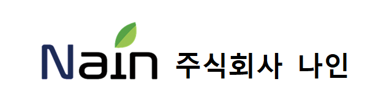
장비를 처음 봐도 따라갈 수 있게, 실제 사진으로 무엇을 보고, 어디를 찍고, 어떻게 적는지부터 설명합니다.
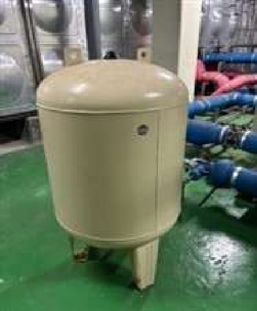
기계설비 성능점검은 건물에서 물과 공기를 움직이거나 온도를 조절하는 장비가 어떻게 일하는지 확인하고, 그 증거를 기록하는 일입니다.
담당자와 설비 이름·번호를 맞춰 보고, 사진 번호와 위치를 기록합니다. 운전 중 장비에 손을 대거나 덮개를 열고 측정하는 일은 현장 절차에 따라 담당자가 수행합니다.
팽창탱크는 물의 온도가 바뀔 때 생기는 부피 변화를 받아 주는 장비입니다. 아래 사진은 신평리가아파트 완료본에 실린 실제 기록입니다.
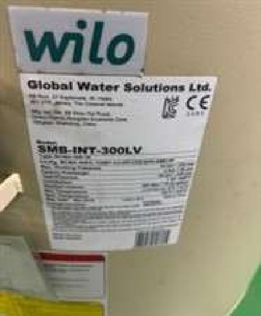
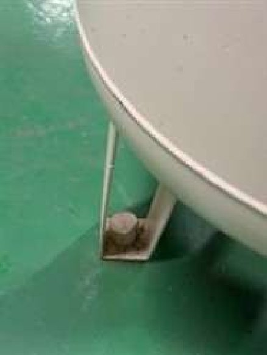
설비ID / 위치: PT-01 / 지하 1층 기계실
항목 / 본 사실: 지지대 상태확인 / 받침과 고정부가 보이도록 촬영함
사진 / 결과: R-001-01 / 고정 상태는 담당자 추가 확인
PT-01과 R-001-01은 입력을 보여 주기 위한 예시 번호입니다.
사진을 보고 먼저 확인할 내용을 찾습니다. 숫자나 색은 그때 잰 값이므로, 이번 회차에는 실제 측정값과 비교 기준을 기록합니다.
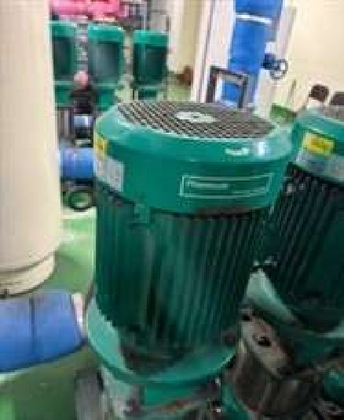
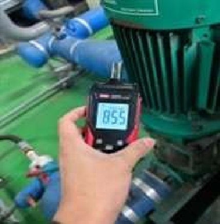
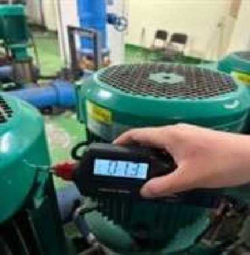
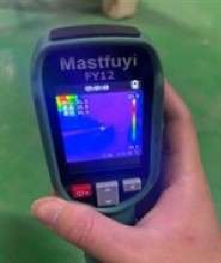
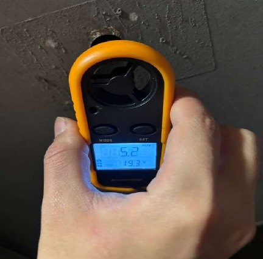
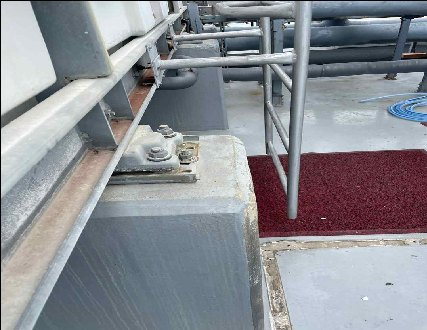
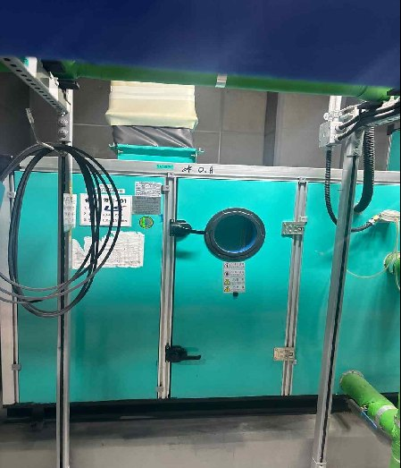
한 문장에 추측과 판정을 섞으면, 다음 사람이 무엇을 실제로 봤는지 알기 어렵습니다. 아래 문장은 모두 연습용입니다.
아직은 확인 필요로 남깁니다. 사진은 무엇을 찍었는지 보여 줍니다. 판정을 하려면 해당 항목의 적용 여부와 현장에서 확인한 근거가 더 필요합니다.
건물에 펌프가 5대 있고, 이번 대상이 3대라고 가정합니다. 실제로 2대를 점검해 1대 적합, 1대 판정보류로 기록했습니다.
대상 3대 중 점검하지 않은 1대는 미점검입니다. 점검은 했지만 근거를 더 확인해야 하는 1대는 판정보류입니다. 펌프 한 대를 다섯 번 찍어도 점검 대수는 늘어나지 않습니다.
어느 설비의 결과가 빠졌는지 설비ID별 상세표를 엽니다. 실제 사유를 확인해 판정을 보완하고, 근거가 아직 부족하면 판정보류로 표시합니다.
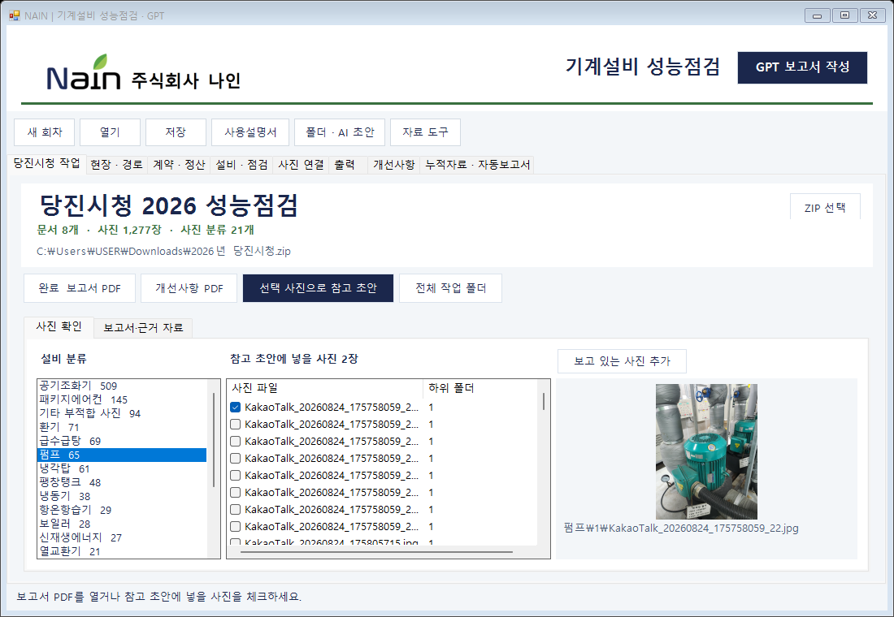
“아래 이번 회차 메모에서 직접 본 사실과 내가 제안한 조치를 나누어 정리해 줘. 숫자·단위·날짜·판정은 바꾸지 말고, 없는 값은 확인 필요라고 표시해 줘.” 답변 속 값을 원래 메모와 대조한 뒤 보고서에 붙입니다.
접수 단계에서 현장 범위와 이번 회차를 먼저 확정합니다. 동일 발주처의 여러 동·공장도 실제 설비 목록과 문서번호를 구분합니다.
현장명·주소·동, 발주처, 승인 양식, 계약 범위, 문서번호, 일정, 정식 제출처와 담당자를 회차에 등록합니다.
설비대장과 설치 현황을 대조합니다. 점검 위치·조건·실측값·사진을 설비ID와 점검기록ID로 연결합니다.
원시기록에서 대상·점검·판정 수량을 집계하고, 상세표·개선표·제출본이 같은 회차를 가리키는지 확인합니다.
적용 기준, 예외·미점검 사유, 부적합 근거와 조치 의견을 확인합니다. 미결 내용과 승인 이력을 남깁니다.
착수 전 자료는 이전 완료본, 최신 설비 현황표, 유지관리지침서, 설계·운전자료, 보수 이력, 계측기 확인자료입니다. 필요한 경우 출입·입회·운전 조건과 현장의 안전절차를 관리주체와 합의합니다.
| 구분 | 회차 기록에서 의미 |
|---|---|
| 설치 / 대상 / 점검 | 설치는 확인된 재고, 대상은 이번 회차에서 점검하기로 확정한 범위, 점검은 실제로 수행한 범위입니다. |
| 미점검 | 대상에 포함되었으나 미실시. 접근 불가, 운전 조건 미성립 등 실제 사유를 남깁니다. |
| 해당 없음 | 설비 사양이나 구성상 특정 항목이 적용되지 않는 상태. 사유를 남기며 설비 자체의 대상 여부와 분리합니다. |
| 판정보류 / 미입력 | 판정보류는 점검했으나 판정 근거를 추가 확인하는 경우입니다. 미입력이나 구형 보고서의 공란은 확정 상태를 알 수 없으므로 따로 확인합니다. |
설치 ≥ 대상 ≥ 점검. 점검 = 적합 + 부적합 + 판정보류를 실제 점검 설비 기준으로 대조합니다. 대상 − 점검 = 미점검입니다.
점검 완료율은 점검÷대상, 적합률은 적합÷점검입니다. 각 식에 100을 곱하고 분모가 0이면 ‘해당 없음’으로 표시합니다. 판정보류가 있으면 건수와 분모 기준을 함께 적습니다.
| 원본 PDF 4쪽 | 설치 / 대상 / 점검 | 원본 판정 합계 | 재검토할 사항 |
|---|---|---|---|
| 당진시청사 | 182 / 79 / 79 | 적합 48 · 부적합 30 | 판정 합계 78. 급수펌프·급탕탱크 등 행이 점검 5, 적합 3, 부적합 1로, 세부 판정 1건을 상세표에서 대조합니다. |
| 신평리가아파트 | 37 / 15 / 15 | 적합 15 · 부적합 칸 공란 | 점검과 적합 수가 같게 기재되어 있습니다. 제출 형식에 맞춰 공란의 의미를 원시기록에서 확인합니다. |
| 삼우 1공장 | 20 / 9 / 9 | 적합 8 · 부적합 칸 공란 | 같은 표의 적합 세부 행 합계는 9입니다. 적합 합계 8과 대조한 뒤 근거를 남깁니다. |
| 삼우 2공장 | 16 / 6 / 6 | 적합 6 · 부적합 칸 공란 | 같은 표의 설치 세부 행 합계는 18입니다. 설치 합계 16의 기준·범위를 대장과 대조합니다. |
표의 숫자는 원본 표기 또는 보이는 세부 행을 재합산한 값입니다. 판정·누락 원인을 추정하지 않습니다. 비교 원본 ①·③·④·⑤
설비에 도착하면 설비ID·위치·명판부터 맞춥니다. 도면이나 대장과 실물이 다르면 현장에서 불일치 내용을 기록하고, 보고서에 들어갈 기준 식별자를 확인합니다.
| 설비 | 점검할 항목 예시 | 증빙과 조건 |
|---|---|---|
| 냉동기·축열조 | 기내압력, 부식, 적용되는 경보·안전기능, 헤더. 축열조는 외벽 균열, 내부 상태, 지지대 고정 등을 확인합니다. | 압력 표시·단위와 운전 상태를 함께 기록하고, 종류별로 적용 여부를 확인합니다. |
| 냉각탑 | 수조·볼탭, 도장·부식, 살수·송풍기, 충진물, 연결 배관·밸브 및 적용되는 수질·유량 자료를 확인합니다. | 전경, 부식 부위, 밸브 위치와 작동 결과를 분리해 기록합니다. |
| 보일러·열교환기 | 보일러의 부식·연소·급수·압력, 열교환기의 부식과 효율 관련 기록을 확인합니다. 증기식 전용 항목은 사양을 대조합니다. | 운전 모드와 측정 지점을 적고, 적용되는 장치와 자료를 표시합니다. |
| 팽창탱크 | 명판과 외관, 균열·부식·누수·누수 흔적, 해당하는 블래더·안전밸브. 지지대와 열화상은 이번 점검 항목에 포함되었는지 확인합니다. | 전경·명판을 짝으로 남기고, 이상 부위는 가까이 촬영합니다. |
| 펌프 | 샤프트·패킹, 누수, 소음·진동, 베어링·모터 온도, 베이스·앵커볼트. 적용 시 유량·양정·동력을 확인합니다. | 설비ID, 운전 중 여부, 계측기와 측정점·방향을 남깁니다. |
| 공기조화기·환기 | 외함, 댐퍼, 동파방지, 송풍기 풍량·소음·진동, 필터 오염·청소 상태, 적용되는 폐열회수장치를 확인합니다. | 필터와 대조 대상은 위치를 명시합니다. 풍량은 측정 위치·방법·단위를 적습니다. |
| 패키지에어컨·항온항습기 | 실내외기 소음·진동, 고정·부식, 누설·배수, 해당하는 과열차단기 상태를 확인합니다. | 실내외기 번호를 짝지어 위치를 표시하고 측정 조건을 기록합니다. |
| 그 밖의 설비 | 급수·급탕, 위생, 고·저수조, 오·배수, 오수정화·물 재이용, 배관·덕트·보온, 자동제어, 방음·방진·내진 등 설치된 대상의 승인 점검표를 사용합니다. | 한 동·공장의 항목 또는 판정을 다른 동·공장에 그대로 복사하지 않습니다. |
항목은 원본 점검표의 사례와 작업 중 확인할 증빙을 정리한 것입니다. 적용 여부는 해당 설비·회차의 승인 기준으로 확정합니다. 원본 ① 24·32·42·45·50·57·81·108·168·176쪽 및 ③ 16·17·22·37쪽
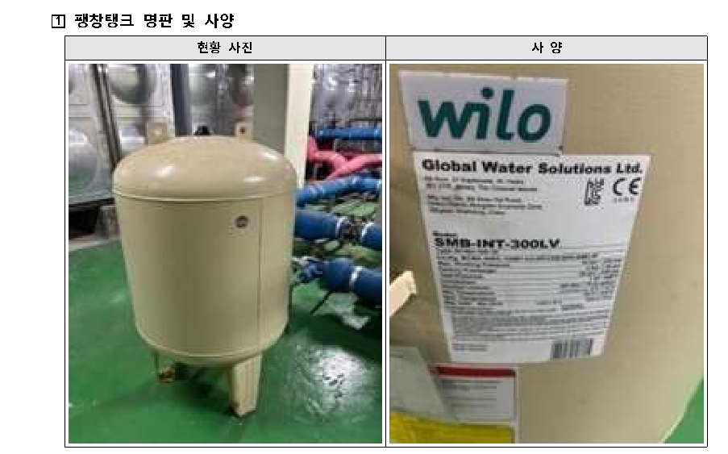
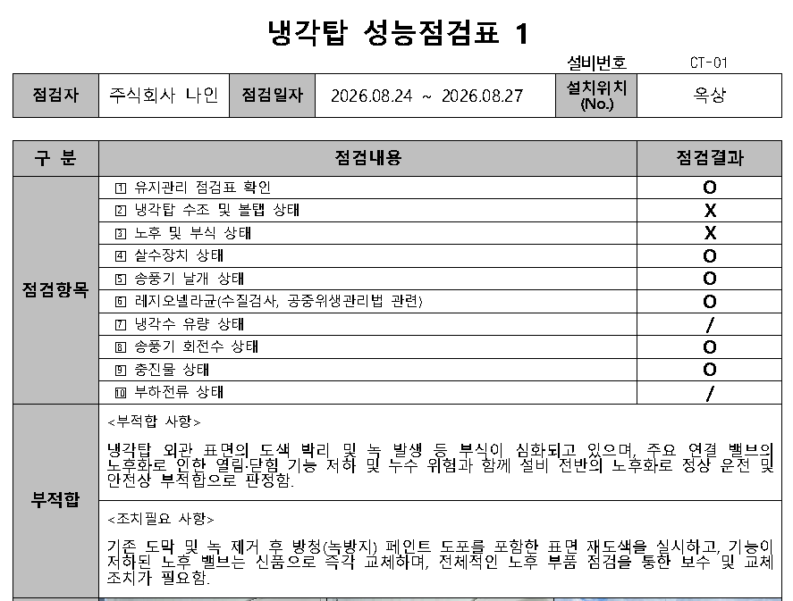
보고서 문장은 무엇을 확인했는지 → 어떤 비교 근거가 있는지 → 이번 판정은 무엇인지 → 누가 무엇을 재확인할지 순서로 씁니다. 원인 추정이 필요한 경우 ‘추정’임을 표시하고 확인 방법을 함께 적습니다.
| 기록 분류 | 기재 조건 | 보고서 처리 |
|---|---|---|
| 확정 부적합 | 설비·항목이 특정되며, 적용 기준 또는 검토자의 근거와 현장 증빙이 있습니다. | 결과표와 개선표를 같은 설비ID로 연결합니다. 조치 의견과 조치 후 확인 항목을 적습니다. |
| 육안 주의 / 관리 권고 | 필터 먼지, 마감 손상, 지지대 부식 등 현장에서 보였고 확정 부적합 여부는 따로 확인합니다. | 관찰 및 관리 권고란에 씁니다. 사진 첨부만으로 부적합 수를 올리지 않습니다. |
| 판정보류 | 비교 기준·단위·측정 조건이 불확실하거나 증빙이 부족합니다. | 확인할 자료, 담당자, 재확인 항목을 남깁니다. 임의로 적합으로 바꾸지 않습니다. |
| 현장 즉시 공유 | 이상 상태가 현장 위해나 운영 차질로 이어질 수 있어 바로 전달이 필요합니다. | 현장 책임자에게 즉시 알리고 통보 시각·대상·응답을 남깁니다. 운전 변경과 정비는 승인 절차를 따릅니다. |
CT-01 점검표에서 수조·볼탭과 노후·부식 항목에 이상이 표시됩니다. 도막 박리·녹과 밸브 작동 저하를 구체적으로 적고, 조치 후 개폐·누수 여부를 다시 확인하는 문장으로 연결합니다.
원본 ① 6·32쪽 · ② 3쪽
다른 펌프를 한 문장으로 묶어도 설비ID별 관찰 증상과 근거는 구분합니다. 비정상음과 진동을 확인한 경우 계측 원시값·비교 조건을 붙이고, 내부 결함 원인은 확인 범위를 표시합니다.
원본 ① 11·81·86·91쪽
“PT-01 지하 1층 팽창탱크 받침 부위에 부식 흔적을 확인함. 재질 상태와 고정 상태는 추가 확인 필요. 전경과 근접 사진 R-001-01·02 첨부.”
근거가 더 들어오면 판정과 조치 후 확인 항목을 추가합니다.
설비ID · 위치 · 항목 · 관찰 사실 · 실측값·단위·조건 · 기준·출처 · 판정 · 조치 의견 · 사진·기록번호 · 재확인 항목
전년도 파일을 참고할 때 현장명·동·연도·문서번호·작성자·날짜를 함께 대조합니다. 이번 회차의 원시기록에서 확인된 값을 날짜 종류별로 적고, 단일 날짜와 기간을 구분합니다.
| 위치 | 확인할 값 | 대조 근거 |
|---|---|---|
| 표지 · 용역 개요 | 예정 또는 실제 기간 중 양식이 요구하는 날짜, 문서번호, 작성·제출일 | 계획서, 현장일지, 회차 등록, 제출 기록 |
| 결과보고서 · 대상 점검표 | 이번 실제 점검 기간, 점검자, 보고일 또는 서명일 | 현장일지, 방문·입회 기록, 결과 확정일 |
| 설비별 상세표 · 사진대장 | 실제 설비 점검일, 필요한 경우 측정 시각 | 개별 점검기록, 원시 계측값, 원본 사진 기록 |
| 계획서 · 개선사항 별권 | 계획서는 예정 일정, 개선사항 별권은 실제 작성·제출 기록 | 계획서 최신본, 별권 반출·송부 이력 |
본보고서 표지에는 착수일정 2026-08-24~2026-08-27과 제출일 2026-09-15가 따로 적혀 있습니다. 개선사항 별권 표지의 ‘제출일자’ 칸에는 2026-08-24~2026-08-27 기간이 들어 있습니다. 별권의 실제 제출일은 표지의 기간만으로 확정하기 어려우므로 송부 기록을 확인합니다.
원본 ①·② 각 PDF 1쪽
실제 종료일이 시작일보다 빠르거나 제출일이 실제 점검 종료일 또는 작성일보다 빠르면 확인 목록에 올립니다. 누락된 날짜는 확인 필요로 남깁니다. 사진의 원본 촬영일과 과거 완료본의 날짜는 그대로 보존합니다.
비교한 네 완료본에는 개요, 시스템 검토, 점검 결과, 유지관리 계획, 검토사항, 점검계획서의 공통 흐름이 있습니다. 표지와 결과 요약을 앞에 두고, 상세 점검에서 원시기록을 찾을 수 있도록 조립합니다.
| 보고서 위치 | 들어갈 내용과 확인 기준 |
|---|---|
| 표지 · 제출문 · 목차 · 결과 요약 | 현장·문서번호·일정·제출일, 설치·대상·점검 수량과 결과. 인쇄 후 목차의 쪽수가 맞는지 확인합니다. |
| 1. 개요 | 용역 목적·범위·현장 정보와 이번 회차에 적용한 기준 및 버전. |
| 2. 기계설비 시스템 검토 및 성능계획 | 유지관리 지침서, 설계·운전·보수 자료, 현장 차이 및 점검 순서. |
| 3. 기계설비 성능점검 및 결과 | 결과보고서, 결과 내역, 대상 점검표, 설비별 상세표·사진, 개선사항 및 별권의 대응 번호. |
| 4. 유지관리 예산·안전조치 | 필요 조치, 우선 검토 순서, 예산 근거와 현장 안전절차. 추정 예산은 그 성격을 표시합니다. |
| 5. 성능점검 검토사항 | 설계값과 실측값 비교, 성능개선 계획, 비교 가능한 기간·단위·계량기 범위로 검토한 에너지 자료. |
| 6. 성능점검 계획서 | 예정 일정, 투입 인력·장비, 설비 종류·수량, 안전과 품질을 확인하는 기준. |
월별 원본에서 계량기와 기간·단위를 맞춘 뒤 증감률을 계산합니다. 금액(원), 사용량(kWh·m³ 등), 최대수요(kW)는 각각 구분합니다. 당진시청의 가스·수도 별권에는 단위가 ‘원 또는 m³’로 표시된 가스 비교 사례가 있으므로, 원본 사용량표에서 단위를 확정한 뒤 옮깁니다. 기준월이 공란이나 0이면 증감률은 확인 필요 또는 해당 없음으로 남깁니다.
원본 ⑥ 전기·가스 및 수도 에너지 별권 각 PDF 2쪽
현장메모.txt, 점검기록.csv, .nain-회차정보.xml, 사진/을 확인합니다. 설비대장을 확인한 ZIP에는 설비수량.csv가 추가됩니다.당진시청_신규회차/ ├─ 01_착수와_대상대장/ ├─ 02_현장_원시기록/ │ └─ 사진/팽창탱크/PT-01/R-001/ ├─ 03_검토용_작업ZIP/ ├─ 04_HWP_초안/ └─ 05_승인본과_송부이력/
폴더를 직접 만들 때는 원본 사진을 보존하고, 사진 설명에 설비ID·점검기록ID·확인 항목을 남깁니다. 회차 폴더 구조는 팀이 합의한 방식으로 운영합니다.
검토 후 체크합니다. 이 화면의 체크 상태는 작업 보조용입니다. 승인 여부와 송부 이력은 회차 기록에 남깁니다.
아래 ‘PDF 쪽’은 뷰어의 1부터 세는 페이지입니다. 인쇄 쪽번호와 다를 수 있습니다.
2026년 당진시청 기계설비성능점검 보고서.pdf 표지 1쪽, 목차 3쪽, 결과 요약 4쪽, 개선사항 5쪽 이후, 설비 상세 24·32·34·42·45·50·57·81·86·91·108·168·176~177쪽을 업무 근거로 사용했습니다.2026당진시청 개선사항.pdf 표지 1쪽과 상세표 2~4쪽을 본보고서와 비교했습니다.2026년 기계설비성능점검 신평리가아파트 보고서.pdf 결과표 4쪽, 팽창탱크 16~18쪽, 펌프 22~25쪽, 환기설비 37·41쪽, 계획서 86쪽을 대조했습니다.2026년 삼우.zip 안의 2026년 (주)삼우 1공장 기계 설비 성능점검보고서.pdf 표지·목차 1·3쪽과 결과 요약·대상표 4·15쪽을 확인했습니다.2026년 (주)삼우 2공장 기계 설비 성능점검보고서.pdf 표지·목차 1·3쪽, 결과 요약·대상표 4·15쪽, 사진·측정 사례 18·22쪽을 확인했습니다.2026년 당진시청 전기 에너지보고서.pdf와 2026년 당진시청 가스 및 수도사용량 에너지 분석 보고서.pdf 각 1·2쪽.보고서의 예전 고시번호·샘플링 기준을 복사하기 전에, 적용일의 법령·고시 시행본과 해당 서식을 열어 확인합니다. 현장 조건에 맞는 기준 출처와 확인일을 회차 기록에 적습니다.